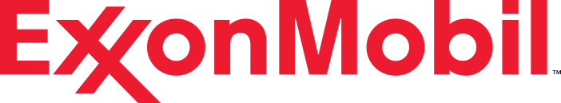
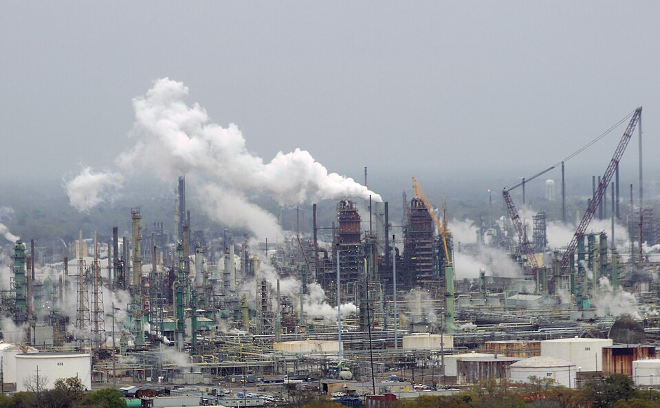
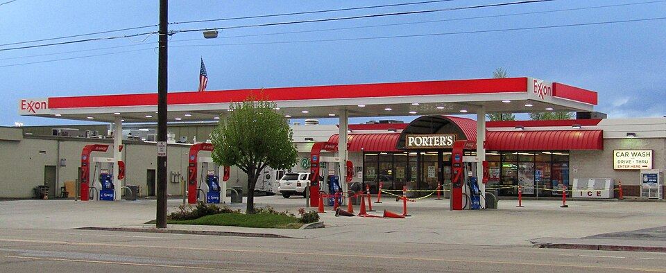

설립연도
1870년 (스탠더드 오일에서 출발)

땅과 바다 밑에서 원유와 천연가스를 찾아 뽑아내고, 이를 휘발유·경유 같은 연료와 화학제품으로 만드는 미국 최대 석유 회사예요. 록펠러의 스탠더드 오일에서 시작했고, 1999년 엑슨과 모빌이 합쳐 지금의 회사가 됐어요. 2025년 순이익은 288억 달러였어요.
칸에 마우스를 올리거나 누르면 자세한 설명을 볼 수 있어요.

미국 셰일 지역, 남미 가이아나 바다 등에서 원유와 천연가스를 생산해요. 엑슨모빌 이익의 대부분이 여기서 나와요.
대표 예퍼미안 분지 셰일, 가이아나 해상 유전, LNG

원유를 정제해 휘발유, 경유, 항공유를 만들고 엑슨·모빌 주유소 등에 팔아요.
대표 예휘발유, 경유, 항공유
석유와 가스로 플라스틱 원료 같은 화학제품을 만들어요.
대표 예폴리에틸렌 등 석유화학 제품
자동차·산업용 윤활유 "모빌 1" 같은 고급 제품을 만들어요.
대표 예모빌 1 윤활유
원화 금액은 1달러 = 1,348.8원(2026년 11월 23일 유럽중앙은행 기준환율)으로 환산한 대략적인 값이에요.
| 기간 | 매출 | 순이익 |
|---|
이 회사는 손익계산서에 영업이익을 따로 적지 않아서(공시에 영업이익 항목이 없어요) 매출과 순이익만 보여드려요.
사업마다 겨루는 상대가 달라요